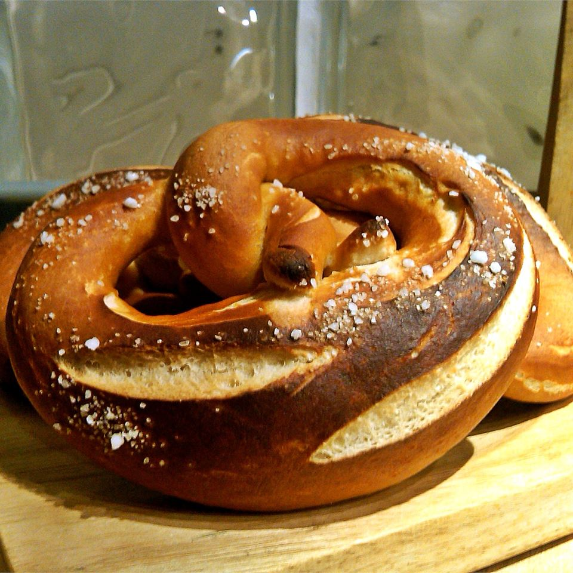

Buffalo Chicken Nacho Bowl

Description
Fun to make, traditional pretzels are great with a nice mug of beer!
Ingredients
- 3 cups all-purpose flour, divided
- 1 tablespoon active dry yeast
- 1 teaspoon white sugar
- 2 tablespoons butter, softened
- 1⅓ cups water
- ¼ teaspoon salt
- 3 cups water
- 2 tablespoons butter, melted
- 1 tablespoon coarse sea salt, or to taste
Directions
- In a large bowl, stir together 1 cup of flour, yeast, sugar, 2 tablespoons of butter, and 1 1/3 cup water. Let
this mixture stand until bubble begin to form, about 15 minutes. Stir in the salt and gradually stir in the
remaining flour until dough can be picked up and kneaded on the counter. Knead until smooth and elastic, about 8
minutes, adding more flour if needed.
- Divide the dough into 6 pieces and let them rest for a few minutes. Roll out one piece at a time into a rope
about 15 inches long. Loop and twist into that cool pretzel shape. Set on a baking sheet while you roll out the
remaining portions.
- Preheat the oven to 450 degrees F (220 degrees C). Bring the remaining 3 cups of water to a boil and add the
baking soda. Remove from the heat. Dip pretzels into the water bath for about 45 seconds, flipping over about
halfway through. Place the soaked pretzels on a greased baking sheet. Brush them with melted butter and sprinkle
with coarse salt.
- Bake in the preheated oven until golden brown, 8 to 10 minutes.